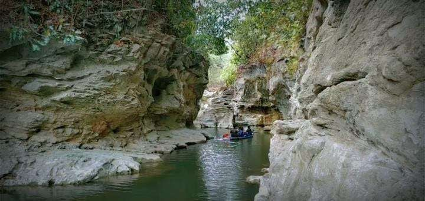

Tourism
Kedung Cinet, a canyon in Jombang Regency, East Java, offers natural scenery with unique rock walls and crystal clear water. This tourist attraction is located in Pojok Klitih, Klitih Village, Plandaan District, Jombang Regency. The stunning view of the towering rock walls with their captivating colors and shapes is one of its charms. The rocks are beautiful, adding to the uniqueness and beauty of this place. Below, a river flows with crystal clear, bluish-green water. The clarity of the water allows visitors to clearly see the riverbed, making it a perfect place for swimming or simply playing in the water.
To fully enjoy the beauty of Kedung Cinet, you must take a fairly long track. The journey to this place takes approximately 4-5 km and is quite challenging route.